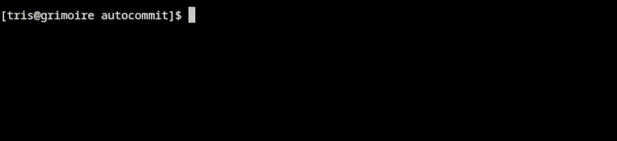
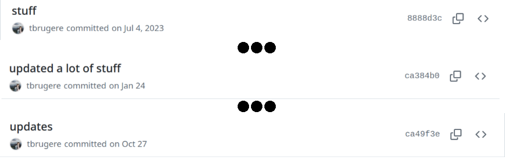

Autocommit: automatically write commit messages

Uses the Mistral api to pre-generate a commit message for you.

Features
Uses Retrieval-Augmented Generation (RAG) to give context to the LLM.
Automatically pre-fills commit messages using git hooks.
Optionally uses the mistral function-calling API to let the model access other files in the codebase (disabled by default).
Setup
You can simply install autocommit using pip:
$ pip install git_autocommit_hook
Usage
To use autocommit, you will need a Mistral API key. You can get one by signing up on the Mistral website, and then creating one from the console.
Then, you can simply run the following command in the root of your repository:
$ autocommit setup --key-file <path-to-mistral-api-key>
This will
create a
.autocommit_storage_dir(untracked) directory in the root of your repository with the RAG database and the Mistral API key.add a git hook to your repository to automatically generate commit messages.
add a git hook to your repository to keep the RAG database up-to-date.
Why ?

This is why
Packages
Main module for autocommit |
|
A simple RAG database |
|
High-level interface to the Mistral completion API |